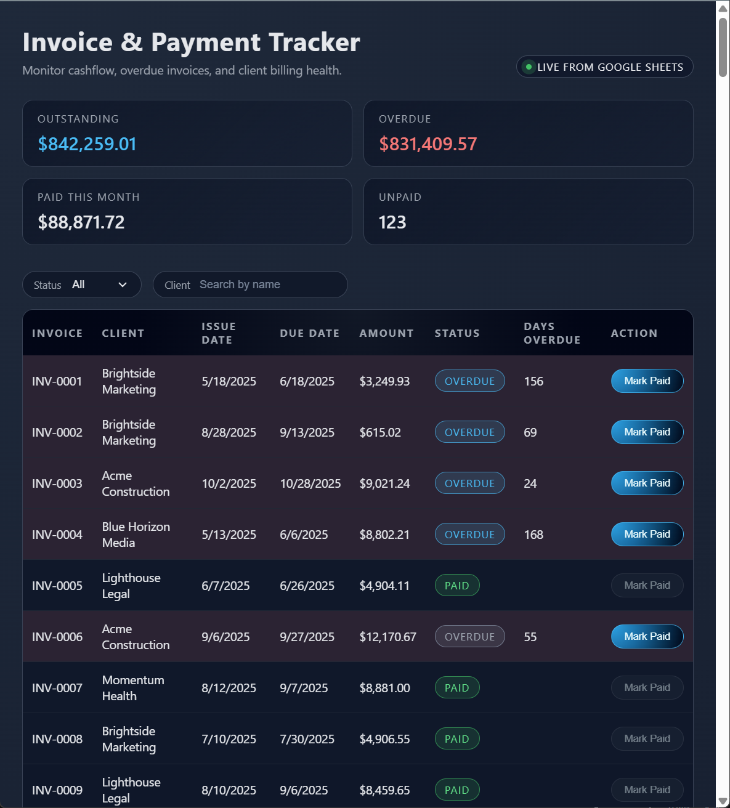

Finance / cashflow
Invoice & payment tracker

Tracks open, paid, and overdue invoices in one place. Filter by client or status, see “paid this month,” and mark invoices as paid directly from the dashboard.